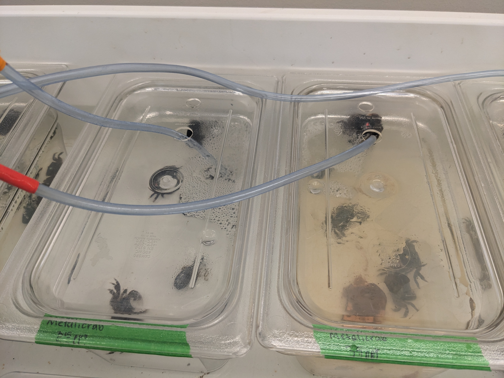

Lab Assignment:
Each research team member will upload an initial figure generated in R to their github repo README in Week 7 Lab. Each member needs to upload at least 1 figure. You will be graded individually for checking this off.
🎯 Lab Goals:
Collect data as per your research team’s plan
Download data files
Load data into R
Reshape data for plotting
Make an initial figure
Upload draft data figures into github repo
Ask for help from your TA and from your peers! This is a steep learning curve, and I expect the process to be at least a little frustrating because you are jumping straight into the deep end of the pool so to speak… We are all learning together and we are here to support each other. Don’t hesitate to ask questions or seek guidance… These steps are bare-bones and are meant to be a starting point for you to build on and customize as you learn more about data visualization in R. The most important thing is to get something up on your GitHub repo so that you can share it with your team and get feedback on it!
Data Visualization Workflow Checklist
Only do the download software steps IF YOU DO NOT ALREADY HAVE R and RStudio on your laptop!
1. Download Required Software
Install R
-
- Windows
- MacOS
- Linux
Install RStudio
2. Open RStudio and Create an RStudio Project
-
- File → New Project
- Existing Directory OR New Directory
Using an RStudio Project helps keep file paths organized and reproducible.
3. Download and Organize Data Files
Example project structure:
my-data-project/
├── data/
├── figures/
├── code/
└── README.mdYou cannot drag and drop files from your computer into RStudio. You need to use the file explorer on your computer to move files into the correct folder in your project directory! Once files are in the correct folder, you can use RStudio’s file pane to navigate to the file and click on it to open it and edit it in RStudio.
4. Open an .Rmd or .qmd file & Install Required Packages
In your files view pane, navigate to the code/ folder and open a new .Rmd or .qmd file by clicking the New File dropdown
Install tidyverse
Load tidyverse
You can insert a code chunk into a .Rmd or .qmd file with the hotkey Ctrl + Alt + I (Windows) or Cmd + Option + I (MacOS).
5. Load Data into R
Read CSV files
Example:
library(tidyverse)
my_data <- read_csv("data/my_data.csv")Pay attention to file paths! The path is relative to the location of your .Rmd or .qmd file. If your data file is in a different folder, you need to include the folder name in the path (e.g., data/my_file.csv mean that the file is in the data/ folder and your code file is in the code folder which is at the same level as the data folder).
my-data-project/
├── data/my_data.csv
├── figures/
├── code/draft_figure.qmd
└── README.mdCheck the imported data
head(my_data)colnames(my_data)glimpse(my_data)6. Reshape Data for Plotting
Many plotting workflows work best with long-format data.
Convert wide data to long format
Example
long_data <- my_data %>%
pivot_longer(
cols = starts_with("Sample"),
names_to = "sample",
values_to = "value"
)Verify reshaped data
head(long_data)-
- One observation per row
- Grouping variables separated into columns
- Measurement values stored in a single column
7. Make Initial Figures with ggplot2
Basic scatterplot
ggplot(long_data, aes(x = sample, y = value)) +
geom_point()Basic boxplot
ggplot(long_data, aes(x = sample, y = value)) +
geom_boxplot()Add labels and themes
ggplot(long_data, aes(x = sample, y = value)) +
geom_boxplot(fill = "skyblue") +
labs(
title = "Initial Data Visualization",
x = "Sample",
y = "Value"
) +
theme_minimal()Save figures
ggsave(
"figures/initial_plot.png",
width = 6,
height = 4
)8. Upload Draft Figures to GitHub Repository
Ask for help from your TA and from your peers! This is a steep learning curve, and I expect the process to be at least a little frustrating because you are jumping straight into the deep end of the pool so to speak… We are all learning together and we are here to support each other. Don’t hesitate to ask questions or seek guidance… These steps are bare-bones and are meant to be a starting point for you to build on and customize as you learn more about data visualization in R. The most important thing is to get something up on your GitHub repo so that you can share it with your team and get feedback on it!
R Resources for Data Visualization and Analysis
Core R + tidyverse Resources
R Graph Gallery: Probably the single best resource for learning
ggplot2visualization by example. Hundreds of reproducible plots with explanations and code.ggplot2 Official Documentation: Official documentation for
ggplot2. Useful for understanding the grammar of graphics and looking up functions/geoms.Tidyverse Official Site: Central hub for tidyverse packages like: -
dplyr-tidyr-readr-ggplot2R for Data Science (2e): Free online textbook by Hadley Wickham and collaborators. One of the best beginner-to-intermediate R learning resources.
Cheatsheets
tidyverse Cheatsheet
Covers:
read_csv()pipes
%>%
dplyr Cheatsheet
Useful functions:
filter()select()mutate()group_by()summarize()
tidyr Cheatsheet
Useful functions:
pivot_longer()
ggplot2 Cheatsheet
Covers:
aesthetics
geoms
themes
facets
RStudio IDE Cheatsheet
Helpful for learning the RStudio interface and shortcuts.
Helpful Visualization Resources
-
Shows add-on packages for specialized plotting.
-
Large curated ecosystem of R visualization tools and examples.
Practice Datasets
-
Beginner-friendly dataset commonly used instead of iris.
Typical Beginner Workflow
# 1. Load packages
library(tidyverse)
# 2. Import data
my_data <- read_csv("data/my_file.csv")
# 3. Reshape data
long_data <- my_data %>%
pivot_longer(
cols = starts_with("Sample"),
names_to = "sample",
values_to = "value"
)
# 4. Make a plot
ggplot(long_data, aes(x = sample, y = value)) +
geom_boxplot()
# 5. Save the figure
ggsave("figures/my_plot.png")